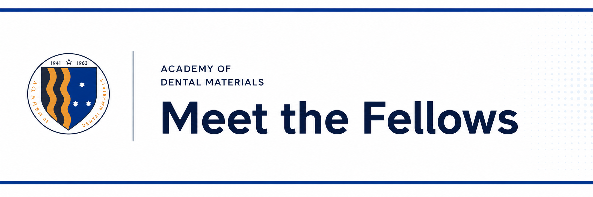

A/P Rosa joins the inaugural “Meet the Fellows” session of the Academy of Dental Materials
The inaugural session brought together global experts to discuss standardising biocompatibility testing and aligning fundamental research with international regulatory requirements.
A/P Rosa took part as an invited expert in the debut session of the Academy of Dental Materials' international “Meet the Fellows” forum, held online on 18 February 2025.
The roundtable focused on the biocompatibility of biomaterials — its clinical relevance, the methodological principles of in vitro and in vivo testing, and alignment with regulatory bodies such as the FDA and CE marking. The interdisciplinary panel brought together senior researchers and industry research directors from institutions including NUS, the University of Minnesota, and the healthcare company Solventum.
Biocompatibility is not only a laboratory metric — it is the guarantee of patient safety.
Implantable medical and dental materials remain in intimate, prolonged contact with living tissues and fluids, and must perform without triggering toxicity, chronic inflammation or immune rejection. The panel discussed the importance of choosing appropriate cell lines, metabolic-stress parameters, and extraction protocols that faithfully reflect real clinical use.
A central message was that methodological mismatch between early academic research and the expectations of regulators — such as the US FDA or European CE marking — wastes resources and delays translation. By turning complex laboratory discussions into consensus grounded in ISO standards, the initiative supports the development of safer, more effective biomedical devices worldwide.